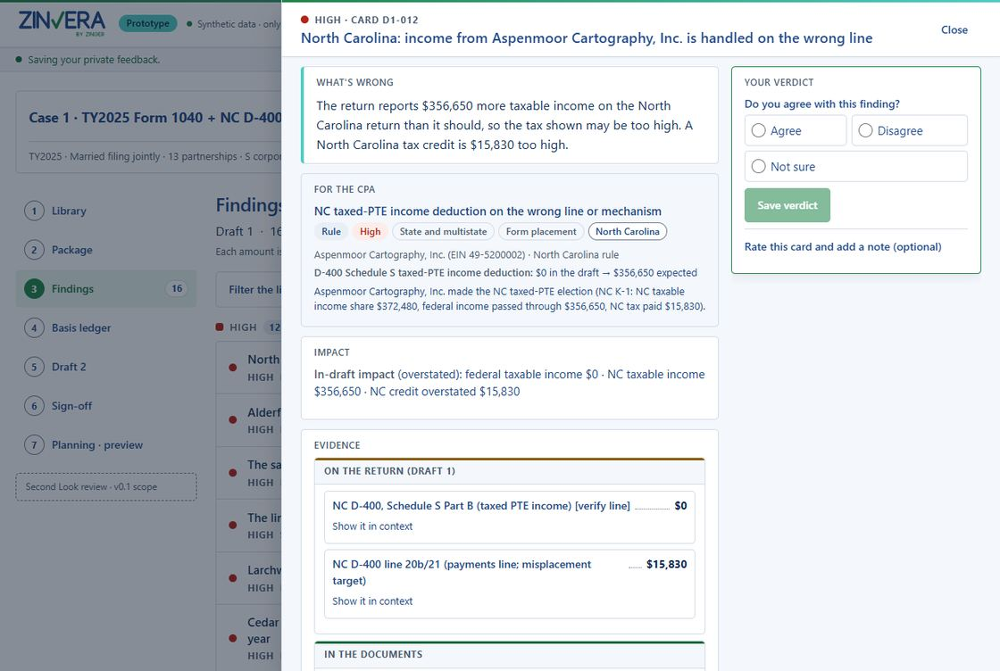

Zinvera: a second look at the return
The right question, asked of the right documents, every time, with the evidence attached.
Zinvera is a review tool for CPA firms from Zinger Software Solutions. It is designed to read the draft return beside the K-1s, the broker statements and last year's return, carry each partner's basis forward year to year, and follow each finding from one draft to the next. In the pilot, reviewers work through pre-computed findings on synthetic case files; the rule set's tax positions are not yet signed off by a CPA.
AI-assisted features (document reading, judgment flags, plain-language explanations, and Zinni, an assistant that answers questions about the return) are in development for the first pilot release; the review engine's tax rules run today, and every number stays in code.
What a reviewer sees
A plain-English line first, the rule for the CPA underneath, and the evidence one click away.


Prototype screens on a synthetic case file. All names, EINs and figures are fictional.
After the tax software, before sign-off
Zinvera does not prepare, change or e-file a return. It is designed to read the package the reviewer already has and show what the sources support.
- Basis continuity ledger for every partnership and S corporation, with the source of each opening balance
- Cross-document checks that read the K-1, the broker composite, the W-2, the state K-1 and the prior-year return together
- Draft 1 → Draft 2 tracking: each finding marked fixed, not fixed, fixed incorrectly, regression or new
- Form 8879 currency check against the current draft and the Publication 1345 tolerances
- The return line, the source field and the citation on every finding
Prepare as usual
The return is prepared in the firm's own tax software.
Zinvera checks the package
Draft, source documents and prior year read together; findings with evidence and citations.
The reviewer decides
Agree, disagree or ask for more; record clearance; export the review notes and roll-forward.
The errors that survive review
The calculation is rarely the problem. The problems are in what the tax software never sees.
Basis that drifts across years
A partner's basis is built from every earlier K-1. When one year's ending balance is not the next year's beginning balance, a suspended loss is released too early or a distribution goes untaxed, and nothing on this year's return says so.
Fixes that break something else
A corrected second draft can reopen an item the first draft had right. Reviewers compare drafts from memory, or not at all. Zinvera is designed to follow each finding into the next draft and say what happened to it.
Signatures on stale numbers
A Form 8879 signed against an earlier draft while the figures kept moving. Zinvera is designed to compare the signed figures with the current draft and show by how much they differ.
Planning preview
After clearance, a preview of planning opportunities projected from the same documents and ledger, labelled a preview with every assumed parameter marked.
AI-assisted features
Document reading, judgment flags and plain-language explanations are in development for the first pilot release. The review engine's tax rules run today, and every number stays in code.
Zinni
Planned for the first pilot release: the reviewer asks a question about the case in plain language and gets an answer that points to the return lines and document fields it rests on.
About ZinniEvidence first, claims last
The same three rules as ZinTrading, applied to a tool for the people who sign returns. See also how we build AI.
Evidence first
Each finding carries the line it came from and the authority behind it. If a rule cannot show its evidence, it does not ship.
Tested on synthetic cases only
We test against synthetic cases with known answers and check the results before we rely on them. We do not quote those figures in public, because they say nothing about client returns.
Review before release
We are working through the rule set's tax positions with a practising CPA. They are not yet signed off, and open questions stay listed inside the product until they are closed.
Try Zinvera on fictional files
Zinvera is in an invitation-only pilot: reviewers work through pre-computed findings on synthetic case files, and no client data is accepted. The rule set's tax positions are not yet signed off by a CPA. We are inviting a small number of firms that review K-1-heavy individual returns to try it on fictional files and tell us what is useful and what is wrong.
Status: Zinvera is a working product name of Zinger Software Solutions Inc. It is in pilot on synthetic case files with pre-computed findings, its rule set is not yet signed off by a CPA, and it is not yet available for client data. Nothing on this page is tax, legal or accounting advice, and Zinvera has no relationship with the Internal Revenue Service or any state tax authority.
Related: All products · About Zinger · ZinTrading · Responsible AI · Ask about the Zinvera pilot